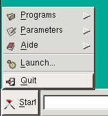
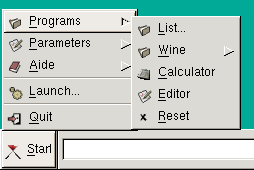
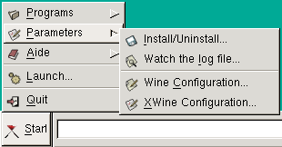
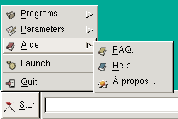
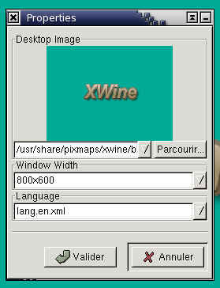

3.2. Start Menu
When running XWine, the displayed window is very similar to the
MS-Windows graphical interface, especially its menu in the lower left
corner which name is "Start". Here are described the actions you
can do from this
menu :

Programs
-> To launch applications under Wine
Parameters -> To
configure Wine and Ms-Windows applications
Help
-> To get help about XWine
Launch
-> To launch an application under Wine (without having configured it)
Quit
-> To quit XWine
3.2.1. The Programs Menu

List -> To get the list of the
applications already configured for Wine.
Wine
-> To run applications given through wine-utils (if
installed)
Calculator ->
To display a small calculator
Editor -> To display
a small text editor
Reset -> To reset
Wine (if it is blocked)
3.2.2. The Parameters Menu

Install/Uninstall
-> To configure the applications for Wine
Watch the log file
-> To
display the Wine log file
Wine Configuration
-> To display the Configuration Panel for Wine
XWine Configuration -> To configure XWine
3.2.3. The Help Menu

FAQ
-> To display the Frequently Asked Questions
Help
-> To display this User's Manual
About XWine -> To display the XWine "About" box
3.3. XWine Configuration
When running Xwine for the first time, you must configure it : click
on Start->Parameters->XWine Configuration
:

You may specify here :
- the image you wish to see in the XWine window
- the XWine window size
- the language you want to use : by default you can choose
English (lang.en.xml) or French (lang.fr.xml),
but you could create your own language file by translating one of the
two above files in your language (for example
create the lang.es.xml file for Spanish). You must restart Xwine
after
changing the language
When you have enabled these choices, XWine est ready to work,
and you can go to the following step : Configure Wine.